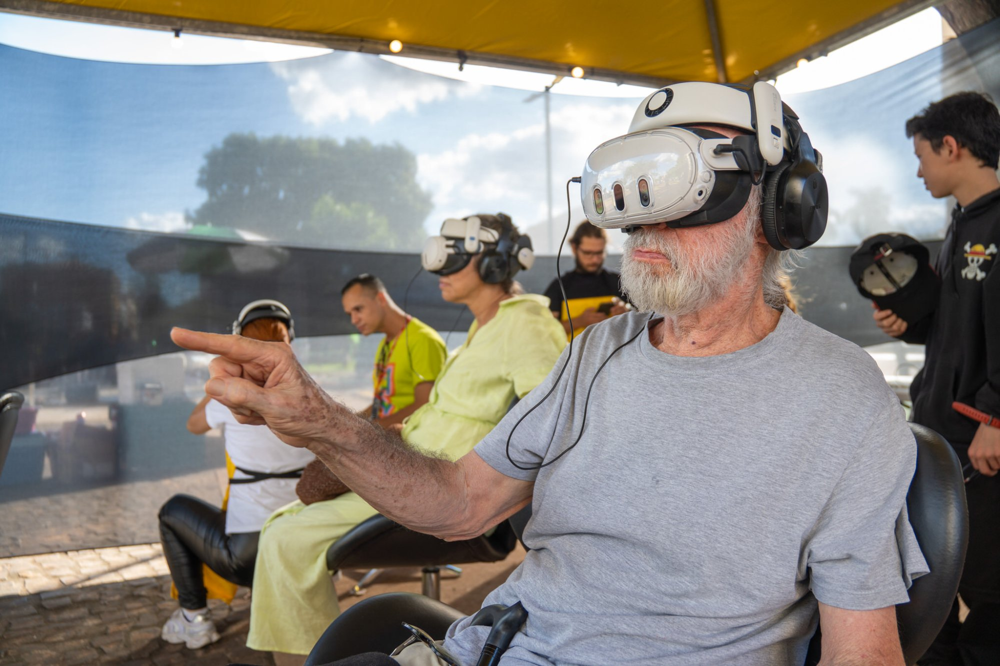
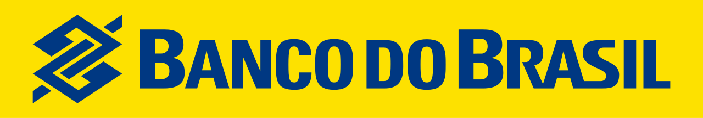
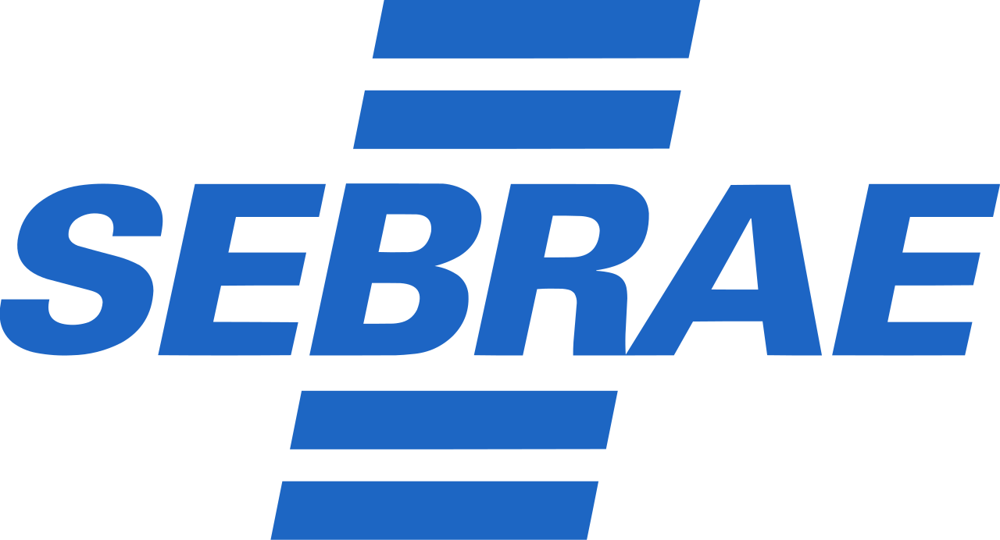
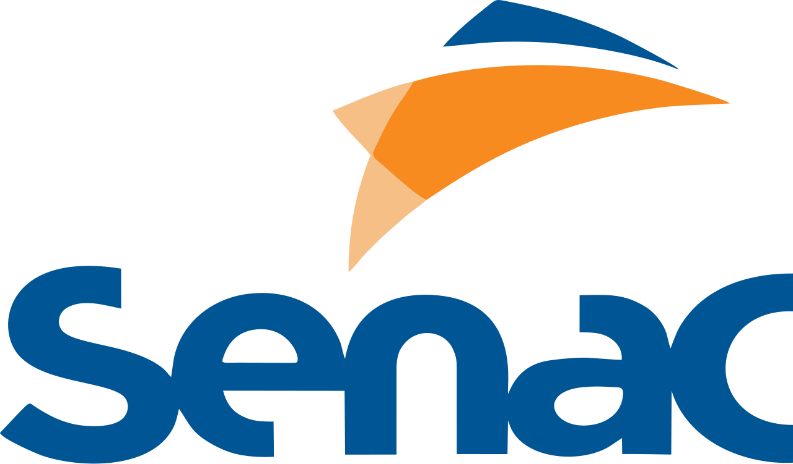

Produtora e distribuidora de cultura imersiva
Onde a culturaganha presença
Núcleo de marca
A tecnologia nunca foi o fim. Ela é o meio.
Presença não é apenas o efeito de estar dentro de uma experiência. É a passagem de uma obra da representação para a vivência.
A VERS existe para transformar obras, narrativas, patrimônios, memórias e conhecimentos em experiências imersivas capazes de ocupar o espaço, encontrar o público e circular entre instituições, territórios e circuitos culturais.
A obra é vivida a partir de dentro.
Os verbos da VERS
Produzir. Distribuir. Materializar. Gerenciar.
Os verbos se atravessam e se sustentam. A VERS produz com rigor de quem opera em escala.
A instituição contrata um serviço ou um produto da VERS para exibir uma obra. Escolha um verbo e atravesse o mapa.
ObraA VERS faz a obra
Produzir
Quando a VERS cria: concebe, dirige, desenvolve e realiza. É o verbo da obra autoral própria.
- Pesquisa e direção criativa
- Design narrativo e de experiência
- Direção de arte e som espacial
CatálogoA VERS leva a obra a circular
Distribuir
Quando a VERS escolhe uma obra, negocia seus direitos, adapta sua apresentação a um território e estabelece as condições para que ela circule. É o verbo do VERS Apresenta.
- Curadoria nacional e internacional
- Licenciamento e localização cultural
- Estratégia de circulação
Prova Festival Varilux de Cinema Francês: 7.500 pessoas por edição, em média
ServiçoA VERS leva equipamento e equipe
Materializar
Quando a VERS dá forma pública à obra: estrutura, implanta e opera a experiência imersiva em contexto real, diante do público. É o verbo da obra em exibição.
- Infraestrutura e implantação XR
- Fluxo de público e formação de equipe
- Manutenção e supervisão de temporada
Prova Uma Noite com os Impressionistas: 120 óculos simultâneos
ProdutoA VERS entrega o software
GerenciarNovo
Quando a VERS entrega a tecnologia que mantém a obra funcionando: um software próprio que orquestra os óculos, as sessões e o público. É o verbo da operação em escala.
- Orquestração de óculos e dispositivos
- Controle de sessões e fluxo de público
- Proteção de dados e controle de acesso
Saiba mais Entender o produto
Portais acesos 1/4
Projetos
Operação em escala
Cada obra entregue tem consistência curatorial, qualidade artística e robustez de operação no padrão do circuito internacional de XR.
Onde estivemos
Onde a VERS já esteve
6 lugares em 3 países, com obras, projetos e prêmios.
Arraste para girar. Toque num ponto para ir até lá.
São PauloBrasil
- ProjetoUma Noite com os Impressionistas2025–2026
- ObraTemporada completa2026
- ProjetoCCXP · Desalma
BatataisBrasil
- ObraA cidade por dentro2026
- ObraSessão coletiva2026
BarretosBrasil
- ObraPraça pública2026
Ribeirão PretoBrasil
- ObraTinta & Fogo2023
LavalFrança
- PrêmioTinta & Fogo, Laval Virtual2023
San José, CalifórniaEUA
- PrêmioTinta & Fogo, Cinequest2023
Sem cidade registrada nos dados: Circuito Sesc de Artes (4 regiões do estado de SP) · Festival Varilux de Cinema Francês (circuito nacional).
Instituições e parceiros
Com quem a VERS trabalha



Vamos dar presença à sua obra
Comissionamento, distribuição curatorial ou operação de uma exposição XR no Brasil.
Falar com a VERSLevar com você